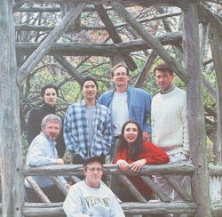
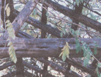
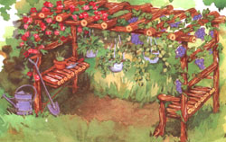
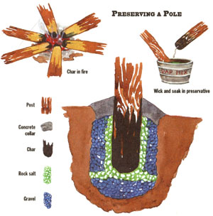
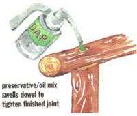
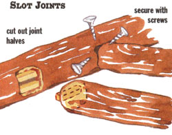
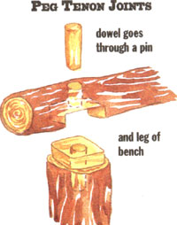
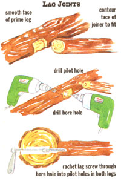
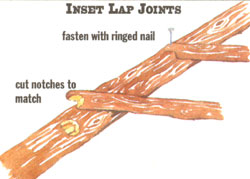

When clearing a fresh patch of sunny meadow to rotate the kitchen garden last year, I discovered a robust young wild grape vine. Its multiple stems were rooted under the dripline of a fir tree growing at the uphill margin of meadow and woods. The vine's leading stem wound up into the evergreen, following the New England native "fox" grape's characteristic growth habit of seeking sun in the treetops. Secondary stems sprawled laterally over the garden-to-be, sending tendrils up every dry old goldenrod stem and milkweed stalk they encountered.
Flush with spring-of-the-year energy, I found myself dreaming of a leafy garden-side arbor dripping with plump bunches of tangy Concord-type fox grapes, their purple-black skins dusted with a silvery bloom of native culinary mold. This will naturally ferment grape juice into country wine and then to vinegar, and it can be cultured to make sauerkraut and sourdough bread. So I pulled the vine free of the fir branches and meadow-growth, and draped it over a temporary trellis: a 10' cut sapling pole supported by a pair of polebean-style sapling tipis.
The vine was still too young to bear fruit, but it leafed out luxuriantly and prospered over the growing season, enjoying unaccustomed full sun and free airflow around its leaves that would discourage mildew and black mold. I did my best to keep the land around its base free of serious competition by trimming the meadow plants around it to a short sod and then tossing the first year's crop of rocks tilled and raked out of the garden soil into a low cone around its base to create a weeddis couraging, sun-heat-absorbing and water-retaining rock mulch.
This fall, as I was tilling compost, old mulch, and new-shredded leaves into the garden and adding still more rocks to the grape vine's collection, I began feeling a little guilty over the way I'd treated the young plant. I'd yanked it out of its protective evergreen refuge, and the now bare and leafless stems appeared mighty scrawny and vulnerable to winter as they drooped from their rickety sapling scaffold at the top of the garden. Taking a welcome break from the tiller, I went up and sat on the moist sod to commiserate with the vine and quickly developed a case of wet rump, a minor nuisance encountered any time during the past growing season that I wanted to rest, unpot seedlings, mix soil amendments, or perform any other chore requiring a flat surface close alongside the new garden.
I don't know if you commune with your plants. I do. Or if yours respond. I can't prove that mine do. But the solution to both the grape vine's dilemma and my minor garden-side problems suddenly came to me as I sat, damp-romped and guilt-ridden beneath the grapevine: I would build a pergola, a 4-post, ladder-topped arbor similar to a child's jungle gym. I'd install a sitting bench at one end, a potting bench at the other, and make space for a shed-roofed lean-to at the rear to provide a handy garden-side shelter for rakes, shovels, the tiller, and supplies. Up one end and across the top I'd arrange the grape vine, and at the other end I'd train
The main difference between a 20-year and 100-year outdoor structure is the integrity of is joints. See pages 70-76 for our guide to the best an old-fashioned near-wild rambling rose. Over the summer, I'd mount two or three hanging baskets of flowers or vining vegetables in the front. In another age, one might mistake it for a bower, the sort of woodsy shelter where nymphs, dryads, shepherds, and fair country maids were forever trysting in classical literature.
The classical idiom hasn't much resonance these days, alas. "Your browser or mine?" "Send me an e-mail" is more like it. I'd eschew the romance and build a strictly practical garden-shed type pergola in sturdy American rustic style from the saplings I was hauling out of the woods as I cleared space for the meandering paths, sunny meadow spots, and watery grottos of a woodland garden. Any lost naiads could go there to tryst with the resident wood sprites.
Our little piece of New England woods is mountainside second-growth, having been selectively logged at least twice since first settled in the late 1700s. As in much cut-over North American woodland, it contains a variety of mature hard and soft woods left by old-time loggers to serve as grandfather or seed trees, plus enough young and middle-aged hardwoods to provide a cord of firewood per acre for the foreseeable future. Where filtered sunlight finds ground in the thinner stands of timber, there's a thicket of undergrowth: runty shade-tolerant shrubs, and understory: gangly young trees competing for limited soil space and sun energy. Too small to be harvested for firewood, all but a tiny fraction will just naturally be shaded out while still small to molder back into forest loam-unless they are harvested for rustic structures such as our pergola.
Even if you haven't managed to move onto your own share of the woods just yet, you can find a pergola's worth of unwanted young trees in most any untended stretch of countryside: along fence and property lines, in vacant lots, abandoned farm fields and beside country roads everywhere. Indeed, State and County road crews and utility company linemen cut out acres of roadside "trash wood" each year before it grows tall enough to interfere with the snow plows or power lines. Scouting county roads in spring and fall can reveal rafts of rustic building wood laid out on the roadside berm just waiting to be collected before the chipper arrives to convert them to mulch. Or, with the landowner's permission, you can do the road workers a favor and fell your own. Take a good set of loppers along with your light-duty chain saw, and cut up the slash-the limbs and tops-into pieces small enough they disappear in the roadside vegetation.
If you've a choice of tree species, pick a cedar if they are native to your area. Eastern or Western, red or white cedar are all good. Often called arborvitae or juniper, and technically softwoods, these conical evergreens produce a tough and elastic wood that is laced with aromatic resins that serve as natural insect and mold repellents for the tree in its lifetime, and provide the fragrant wood used to line cedar chests and closets where it naturally repels moths from wool clothing stored during the warm months. Though trimming off a cedar's full skirt of small, prickly needle-covered limbs is a chore, fences and outdoor structures made from the trunks will remain sound many years longer than hardwoods. Indeed, most any evergreen will outlast oak, maple, or hickory in outdoor use-unless the hardwoods are treated periodically with preservatives.
We don't live in cedar country; eastern red cedar doesn't grow as far north, nor eastern white cedar as far south as our place. Young white pine, balsam fir, spruce, and hemlock are too soft and whippy for small-scale rustic structures. Besides, young specimens are too scarce in our woods to harvest. So I found myself limited to the abundant hardwoods.
Fast-growing "trashwoods" such as wild cherry, the willows, butternut, alder, and poplar are technically hardwoods, but when young are too weak to support anything much heavier than a robin's nest. Similarly, small white, yellow, or black birches are not only weak structurally, but if limb scars and cut ends are exposed to the weather, posts will rot quickly but imperceptibly inside their thin, shiny, and waterproof bark.
I wanted to keep young sugar maples for future sap production, and preserve the scattering of oaks and the occasional beech or hickory sapling for posterity or firewood. This left me with scores of white ash saplings ranging from 2 to 6 inches through at the bole, including two stands that colonized clearings in the canopy left when a pair of large poplars blew down in a storm during the mid-eighties.
Logwood from mature, well-seasoned ash produces a genuinely hard hardwood that is traditionally used to make baseball bats or is fire-hardened for ax handles. My young ashes were arrow-straight, tough enough for a rustic structure, and grew so densely that they had to be shading one another out. I'd already begun harvesting the better trunks, stacking them to dry and debark naturally for use in building log-cabin rustic furniture tough enough to hold up to many generations of puppy teeth.
I picked out six trunks measuring between 4" and 5" in diameter at the base and 12' to 20' long to be trimmed to length to serve as the pergola's 4 vertical support posts and its pair of horizontal overhead rails. Trimmed-off top ends and smaller ash poles could serve as stretchers and dec orative infill between the main poles, and pole sections of 6" and larger trees could be split for roof shingles or half-rounds to close in the rear lean-to. Our woods is also full of ancient grape vines and seedling apple trees that could easily spare a few gnarly, curved sections of wood to form a gracefully curved settee back, naturally angled corner braces, and reinforcing knees.
Lacking your own trees of proper size, you can purchase 4" to 6" diameter cornerpost stock and smaller rails in needed lengths from a fencing contractor. Indeed, I considered purchasing our six main poles, as most fencing pros these days use plantation grown, naturally-long-lived red or white cedar that comes arrow-straight and with limbs trimmed even, with the thin, papery bark. But, at a dollar and up a running foot, fence poles would have cost much more than materials needed to weather-and rotproof the susceptible portions of wood that I can get for nothing...well nothing but the time and pleasant labor of cutting, trimming and dragging it out of the woods.
From the many blue, white, and black feathers found around the spot this summer, I'm quite sure that it was one of our squawky, grape-and-blueberry-loving blue jays that perched on a branch of the fir tree a few years back to deposit the undigested seed that grew into the grape vine that determined the site of our pergola: snugly placed at the NE, uphill corner of the new garden, bordered in front by neat vegetable rows, on the south side by a large fir tree, and in back and on the left by dense woods. Its north-south orientation was virtually demanded by the site. The bench seat and open front face the setting sun and a gradually broadening downslope that falls from the garden, across a bit of lawn and the road, and over a half mile of fields and flood-meadow to the river, and beyond to the western mountains. Its proportions were determined by the setting. Its bark-brown silhouette, fringed with light grape-leaf green and old-rose pink, is comfortably framed by the varied shades of garden plantings in front, the tall fir tree to its south, darker forest greens at the other side and in back. All this is capped in clear weather by a wooded peak against a cool blue sky flecked with white clouds. Its as though the little shelter had been there always.
Not even red cedar can hold out against ground-borne decay organisms forever, and original 19th Century rustic structures that have resisted rotting-out at ground level were built to stay dry atop firm stone foundations. Buildings went on mortared rock cellars or footings dug below frost level. Benches, gazebos, and pergolas built at the lake side or in the woods were set up on low piers of field stones. Today, rustic dwellings and large garden structures intended to last for generations go on poured concrete walls or deep concrete piers formed inside cylindrical Sonotubes.
Small and easily replaced rustic structures such as our little pergola are more easily built "fence style" by burying the main support posts in the soil, while protecting them from water and decay as much as possible. One option is to use commercial lumber pressure-treated with a copper/arsenic compound. I do use such "PT" for underpinnings for decks and dwelling additions built to last 100 years, but wouldn't want to eat grapes grown on it or have arsenic of any kind leaching into the vegetable garden. Besides, PT would somehow violate the spirit of the rustic tradition; I wouldn't want a blue jay to land barefoot on a PT post.
I did elect to bury the four support posts, but protected the decay-prone ash with a combination of old-time and modern measures.
First, I put the post bottoms into a fire I lit in the garden after the first snow to dispose of old tomato and potato vines and mulches, killing pests and pathogens along with the dry vines. The posts were still fairly green. I shaved the loose bark off the lower 21-feet of each, and turned them in the fire till the exposed surfaces were charred. As farmers learned millennia ago when they needed to fence-in newly domesticated wild cattle, the natural creosote on fence logs they'd felled and trimmed to length by burning through at the base (that's slow, but easier than banging away with a stone or copper ax) provides an effective insect and mold deterrent that can retain its effectiveness for decades.
To further extend the pergola's life, I bored a foot-deep hole up into the bottom of each post, stuffed in an 18" length of cotton rope to serve as a wick, and set the posts in a tub. I poured around them a mixture of equal parts wood preservative, turpentine, and linseed oil (a concoction used on wooden boat hulls since the days of Noah and the Arc) and let them soak for as long as possible. The preservative Noah used was pine tar; I used DAP's below grade wood preservative. Like Cuprinol and other brands, it contains relatively benign copper oxide in a strong solvent (see illustration). Copper isn't a hazardous toxin-since time immemorial mankind has eaten from copper cookware and worn copper jewelry but its natural heavy metal properties will repel termites, carpenter ants, and powder post beetles, as well as mold and fungus, both water and airborne. I saved the preservative mix not soaked up by the poles and will apply it again later to the cut ends and exposed wood of the pergola.
To anchor the posts and guarantee drainage around them, I assembled two sacks of premixed concrete, a pile of crushed rock and as another old-time preservative, a sack of coarse rock salt. But first, I had to lay out the plan and dig post holes.
Country pergolas and sitting shelters with benches built-in demand human dimensions: high enough to enter, wide enough to provide a comfortable seat, and deep enough to shelter two people and a pair of big dogs during a summer shower.
Ours was to sport a workbench at one end in place of a second sitting bench, and so needed to be wide and deep enough for a table to hold seedling flats, pots, and tools. Wild grape vines bear fruit clusters on short stems, so the top scaffold had to be low enough for casual grape fanciers to reach easily. I guesstimated that a structure about 10' long, 4' deep and a little over 7' high would do-and would fit comfortably into the space between garden and surrounding woods with plenty of clearance all around. It would look natural, not forced or squeezed in.
To start, the south (right) side postholes needed to be dug with centers about 4' apart and astride the young grape vine that had initiated the whole thing, but the holes had to be sunk without severely damaging the young plant's roots.
Please note that measurements are given in approximations. In rustic construction, raw materials are seldom perfectly straight, and never as uniform as the lumberyard 2-bys used in conventional building. So the layout and dimensions of a pergola or gazebo dare not be as to-the-fraction-of-an-inch precise as a house plan. Plus, in our rocky New England soil, a posthole won't necessarily go down where a plan tells you to dig; an immovably huge boulder may be lurking just below the surface.
Although the plan dimensions of a simple rustic structure needn't be followed to the inch-indeed, can be modified any structurally sound way the builder desires-its overall shape must be regular and its vertical and horizontal main frame members must be plumb and level. Trim pieces with crazy angles, gnarls, and twists will enhance the rustic feeling when used as ornamentation or infill within a regular framework. But a crazy shape or out-of-frame does not increase the natural and rustic appearance as one might as assume since there is no such thing as a consistently straight, plumb, or level line iii nature. Rather, it looks sloppy and suggest amateurish or shoddy workmanship.
To establish our pergola's ground plan, I laid out a rectangle of small saplings to approximate the desired size and shape with the south end centered at the grape vine, the opposing sides parallel, all four corners 90°, and the shape trued to a rectangle. To check this, the lines running between diagonally opposing corners should be the same length.
With the pointed end of a 6' steel pry bar I probed as far as I could into the soil 2' to each side of the grape vine. I located stones, but none made the dull, boot-sole jarring thud indicating a large boulder, anal I was able to winkle the probe around them, down more than a foot and a half. I repeated the probe at the other two corners. Then, with a clamshell posthole digger, garden spade and fork, long-handled shovel, and the 6' prybar, I dug 2' to 3' deep holes at the northern corners. It took a little more exacting excavation to dig the holes at the other end-at each side of the grape vine. I needed hand gardening tools to dissect roots out from soil and larger rocks, and I had to make "scratch 'n sniff" tests to differentiate grape roots from the piney-smelling roots of the nearby fir tree.
Many pergolas have split-log, rough-sawn, or hewed-plank floors set up on stone foundations, but such niceties seem better suited to shelters for spiffily dressed Sunday strollers in a city park than to a garden-side work shed in the north woods. Besides, our pergola is on a 10 foot piece of hillside that falls a good 18" from the left top corner to the right bottom. This means that a floor would have to be terraced.
To look best, however, the tops of all four main posts must be even-must describe a fiat and level plane. To determine their lengths from different post-hole-bottom depths, I needed to establish a ground-level plane of reference.
So, I hammered yard-long lengths of sapling into each post hole and, beginning at ground level at the highest post location, strung a line between them around the outer perimeter using a small line-level to assure that all sections of the line were level ...thus, on the same imaginary flat plane. Then I measured the distance from the level line to the bottom of each post hole. These figures added to the desired 7' height of the frame would determine the total length of each post.
Once they were cut to length, I set all four uprights side by side with tops even so I could mark and precut opposing lap joints for stretchers that connect posts and rails, and mark attachment points for seat and table frames on lower inner margins of the posts. Then I beveled the tops of the posts and cut dish shapes into the bottom ends of the 10' long top rails so they'd fit down over the post tops and help repel water. The primary tool used to do this rough milling is a rotary chain saw "Lancelot" on a 4 1/2" angle grinder.
I waited for the weather to warm briefly to melt the early snow before putting in the posts. In the bottom of each hole I tamped in several inches of crushed rock, tossed in a handful of rock salt and set in the post, assuring that it was vertical with a carpenter's level. In successive 6" layers, tamping as I went, I filled the hole around each post to 6" below the surface with crushed rock, n moving the larger stones. A handful of rock I salt went around the post between each rock layer. This salt will dissolve slowly over time to soak in and pickle the wood as an added preservative measure. Primitive, but effect ive for centuries.
The posts were well set, but I waited to set them in concrete so they could still be adjusted an inch or two an any direction necessary to fit their tops to the caps milled into ends of the overhead rails.
After soaking post tops and the end and inner surfaces of the caps milled into the rails with preservative, I cut 6" wide circles from tarpaper and stapled one t( each cap and post top to keep water from migrating in to rot the joints. Tarpaper of aluminum flashing helmets can be fashioned with shears and fastened over each joint with roofing nails and tar if you like or, exposed joints can be coated inside and out with tar that will serve as a weal, cement and will exclude water entirely
After lifting the overheads onto the posts and adjusting the posts as needed to mate the joints, I fastened verticals to horizontals, bulling in four 3" deck screws with a cordless drill/driver. Screw holes must aim at an upward angle or they'll admit water. l inserted these from the rim of the post top into the rail at a sharp upward angle: this is what is called an "upside down toenail."
With a weather report promising several days warm enough that cement could set up and harden before it froze, I mixed concrete in four separate half-bag batches and filled the upper 6" of the holes with concrete and smaller stones from the excavation. I laid in a concrete ring around each post, forming the top surface of the ring into a shallow cone that peaked up around the post base a little above grow, (I level, and smoothing the surface to ward off flowing water. Setting hardwood posts this way-with a rot-proofed bottom bed ded in a good-draining matrix, and concrete restricted to a collar around the top-will guarantee longer life than enclosing the entire post bottom in a cocoon of cement that will keep the wood constantly moist and susceptible to rot.
Next fall I'll drill a half-inch-wide, down-sloping hole two or three inches into each post just above the concrete collar. I'll insert a funnel improvised from aluminum foil in the hole and keep it full of DAP/linseed oil/turpentine mix for a fairweather week or more. This will permit a fresh dose of preservative to soak in where it is most needed-at ground level, where buried posts most readily absorb water periodically, increasing susceptibility to dry rot, a destructive fungus that thrives in moist wood. The holes will be plugged with whittled dowels to keep water out during the balance of the year and the treatment repeated each fall-the season when the ground is driest.
At the same time, I'll fill a pump-type oil can with preservative solution and apply it to all exposed wood in the frame, particularly post tops and bench legs.
As bark sloughs off over time, I'll mix more preservative and apply it to all exposed wood after grape leaves are down each fall. The natural vegetable oils in the linseed and terps will keep the wood from becoming brittle and the DAP will fend off boring insects such as carpenter wasps and orchard bees as well as prevent infection by common mildew and other wood-eating fungi, moss, and molds.
For greatest strength and stability, the two upside-down "U" shaped post/rail frame components needed to be connected with lateral stretchers (like rungs in three ladders) at the midpoint of each ladder-frame, and close to the 90°angle joints in both the horizontal and vertical dimensions.
First, I cut 7 stretchers of 3" to 4" diameter ash to be 4 inches longer than the measured distance between post and rail at their mid-points and at points 18" in each direction from the 90° joints. That means three midpoint stretchers plus four others, some located a foot-and-a-half down from the top of each pair of posts and others connecting the overhead rails the same distance in from each end. Using the Lancelot and inch-plus-wide logbuilding chisels, I made wide slot-joints that will prevent the spreaders from rolling if some youngster decides to use them to climb up on the pergola. Indeed, stacking cylinders to make a wall defies the laws of physics, and no-roll joints are desirable in any log construction. If a log can roll in a joint it will, and work loose over time.
To make these joints, I first cut notches into top and bottom of each stretcher end to produce 2" wide, 2" deep rectangular tenons at the ends of each stretcher, assuring that shoulders at both ends were parallel. Then I milled mirror-image open horizontal mortises (slots) to fit each tenon into the post. Finally, using a (nonscarring) mallet and block as needed, I firmed the joints together and locked them in place with deck screws driven through the post into the stretcher from the sides. (see sidebar: Slot Joints.) If you anticipate that your pergola will be actively used as a climbing/play structure by children, fasten these main joints with lag screws. (See the sidebar on lag joints on page 74.)
To provide rungs for plants to climb on, I filled the balance of each ladder-frame by nailing-on lengths of straight ash, twisty apple limb, and old grapevine each 18" or so. Strictly ornamental, the straight, regular stretchers were fastened with inset lap joints where undersides of ends of stretchers are notched out to fit into slots milled and chiseled into inside edges of posts. The more ornate, twisty stretchers were placed in full view for best visual impact. Their ends were individually shaped to fit into custom-milled notches in the posts.
To fasten, I used a cordless drill and 3/32" bit to make small pilot holes through the stretcher ends and fastened them with deck screws if the stretcher was large enough to take it without splitting. To fasten thinner pieces, I tapped in 2", #6 galvanized ring-shanked box nails. You needn't inset every stretcher or length of infill or fuss over every fastener you use if the wood is more ornamental than structural. Generations of rustic builders have simply nailed sticks together without even drilling pilot holes. I prefer using selftapping galvanized or rustproof alloy deck screws to nails as they are easier to remove without ruining the wood if you find you've made a mistake. More importantly, they can be cinched tighter or replaced with a longer screw to tighten up a joint that's become loose as wood shrinks in drying or that is getting sloppy from constant working by weather or hard use.
I had a hard time deciding how to support the pergola's furniture. The outer edges would be no problem: they'd hang off stretchers installed between the vertical posts at each side. But I mulled at length over the inner supports. Short legs would be easiest. Stronger would be floor-to-ceil ing posts, but they'd be have to be swung around to sit down and pulled on to get up and would have to be large-diameter logs that were rot-proofed and put into post holes. I'd already done that with the main posts. Maybe next time.
I decided to hinge the work top and support it with angled braces, and to build the sitting bench on stout but stubby legs.
For the latter I sought out a pair of ash trunks that had similarly shaped curves right at ground level-a characteristic of seedling trees that aren't able to grow straight up from their sprouting bed but must bend around a rock or other obstruction. The curve provides an attractive lower leg as well as a firm and stable foot.
I intended to set the legs atop flat rocks sunk to ground level to reduce contact with soil-borne decay organisms. Nonetheless, I cut out yard-lengths of curved-bottom trunks and soaked the bottom 12" in DAP/terpentine/linseed oil preservative for as long as I could.
The first step was to install stretchers between vertical posts to support the rear of the table and bench seat and to provide the bench's back. I selected lengths of 3" to 4" diameter ash slightly longer than 4' and installed the rear seat support 18" up on the south frame and the back another 18" above that. A rear table support was put in 34 inches up the other side. All were fitted inside and even with the vertical posts and fastened using milled butt joints secured with lag bolts. (See sidebar: Lag Joints).
To make the potting table, I fashioned an 18"x 42" rectangular frame of 2f" ash trunks, fastening corners with lap joints connected with 1 1/2" deck screws. For a top, I cut a dozen 20" lengths of 2" ash and notched out each end to overlap the frame, then fastened them through small pilot holes with clench nails, a small boat builder's favorite, made of soft enough metal that ends protruding through the other side of the frame can be hammered over to "clench" them in place.
I fastened the back of the frame to the pergola with eyehooks in the table that fitted into eyescrews in the stretcher. To support the table, I cut two forked saplings so the forks would fit snugly against a post at ground level and angle up so they crossed under the table, where they can be wired together for more stability. I whittled the tips to flat points that would fit up into the bottom of the front edge of the table.
The table can be a little springy. It is most stable if weighted at the back with rocks over the attachment points. I've never gotten the table so it will hinge properly and fold down flat. But it does lift off easily and both table and supports store out of the way up against the side frame, hanging on loops of wire from nails in the overhead. In retrospect, it would be better if fixed permanently in place or attached at the rear with proper brass hinges so it can be folded up. Next year. Or maybe I'll whittle pioneer-style wooden hinges from ironwood (hophornbeam) this winter.
Working in place, I made a 36" wide replica of the work table for the bench seat, but used larger-diameter stock all around and incorporated the 18" high stretcher for the rear bench frame member. The two side members of the seat frame were attached to the stretcher with milled butt joints, lagbolted on.
I trimmed the two curved-bottom leg pieces to 24" in height and connected them with two 4' stretchers: one 6" up from the ground and the other about 16" up so it would rest just under the seat. Both were affixed with milled butt joints and fastened with deck screws. Where the legs butted against the frame, I notched them to fit snugly and fastened leg to seat frame with lag bolts inserted from the inside of the frame out into the leg.
To support the rear of the bench's armrests, I installed a pair of vertical posts, between the back support stretcher and rear of the seat frame, with notched lap joints. The armrests are 22" long, 3" diameter logs notched at the rear to fit snugly around the vertical support posts where they are fastened with deck screws. The front of the arm rests are milled flat underneath to mate with the leg tops, and are fastened to the legs with peg tenon joints.
To hang garden tools, I installed a pergola-wide pole along the back of the structure 18" down from the overhead. It is fastened to the opposite verticals with notch joints to reduce sagging, and is connected to the rail above with a milled butt-joined stretcher at its midpoint. I set pairs of deck screws into this beam to hold garden rakes, shovels, and other long-handled tools up off the ground during the season.
Finally, I built a low shed-roofed lean-to at the rear of the pergola to shelter machinery. Six feet to the rear I sank three 5' long preservative-soaked poles 2f' deep in a line parallel with the pergola. Across their tops I nail-and-notch-joined a 10' pole. I made a frame by fastening-at the edges and down the middle-stout 7' poles between the horizontal that supports the rakes and shovels and the newly-built frame. I then fastened thinner saplings every foot or so between. These tended to sag, so I ran a horizontal pole under them about half-way down. Rather than trying to get nails into thin whippy saplings, I found it easier to wire the small poles to the horizontals with galvanized soft florist's-type wire. For a roof, I tied on a brown plastic tarp with grommets along the edges. Next fall I plan to replace it with traditional rustic-style split poles or wooden shingles stapled to a series of side-to-side poles-their spacing depending on the length and weight of the shingles. Shingles need to overlap so at least half their length is lapped, and the other half exposed to weather.
Split poles can be butted side-by-side and fastened running down-shed; the channels between them will drain off most rainwater. Grooves in ash run up and down the bark; if I can get mine to split, I may try this kind of shed roof. Split poles can also be run sideways and half-lapped; this can make a fairly dry roof, if steep enough.
Pine shingles are not all that expensive to buy, but I'd prefer to split my own with the froe and mallet. I'll need to find a suitably-sized cedar or white pine, fell it, and let it season, then section the trunk into splittable lengths. Attaching shingles to springy poles requires a nailing machine with a lot of punch-an electric or pneumatic stapler would be best.
With the completed shelter ready to accept six-dozen generations of seedlings, all you really need to do now is sit down, collect your thoughts, and bone up on meaningful plant conversation.
This joint is most commonly used to attach the end of a smaller log (the joiner) to the side of a larger (prime) log. The full-width slot cut into one and the insert milled out of the other are designed to fit together in the horizontal dimension. Arranged vertically, the joint would be pulled apart by gravity.
First, chisel or mill off bark and surface irregularities in the joining surface along the long (horizontal) dimension of the prime log to reveal a circle of clear wood that's chiseled to be perfectly flat and same-sized as the end of the log to be joined to it. Cut the face of the joiner log perfectly flat and square as well. Mark horizontal centerlines and mark out stock to be removed around mortise (the slot) and tenon (the insert) of joint. With saw and chisel or power tools, mill a 2" thick, horizontal through-mortise (a slot) at midpoint of the prime log and across its entire face. The slot should be at least 1" deep and 2" to 4" is better-but no more than one quarter of the prime log's thickness.
In the end of the joining log, mill out wood at top and bottom to make a mortise to fit into and fill the slot, 2" thick, an inch or more high and full across the face of the log. Trial fit and trim with chisels as needed to make a tight joint.
Coat all surfaces with pitch or roofing tar for most watertight fit.
Tap joint together tight with mallet and block and secure with four or more self-tapping screws going both ways.
In small logs, do not be tempted to overfasten and bore holes clear through prime log to secure this joint with a lag screw. The bore hole will compound with wood removed for the slot to create too much of a weak spot in most wood species.
Pegged joints are at once the most traditional and most elegant fastening method. For indoor furniture the peg joints are glued together are strong enough to outlast the wood.
I'd not trust even epoxy cement to hold in rustic construction, however. Sure, we use it in building modern wooden boats, but the epoxy goes inside and out to encapsulate the wood and seal out moisture. Plus, there aren't any bilge pumps in a gazebo. I feared that any glued joints would be compromised and forced apart by expansion and contraction of wood as it absorbed and lost the moisture that naturally comes and goes in outdoor furniture and structures that get rained and snowed on.
To peg logs, I make simple friction joints, inserting a bone-dry dowel into holes drilled all the way through the joint. As it dries, the green building stock will grip the dowel tight. If in doubt, I insert nails into holes drilled through the dowel at both sides of the joint, and pin it with small nails.
You can use a woodworker's doweling jig to drill plumb holes in each piece to make hidden joints. Easier is to first tie or tack the joint in place (if needed) and then drill a single pegging hole through both pieces at the same time and hammer in your dowel.
Drilling holes that are a 32nd or 64th smaller is conventional, but is likely to split green rustic building poles. I use a drill bit the self same size as the dowel. A dose of DAP/linseed/terpentine preservative will soak into the dry birch of the dowel to keep it healthy, and the linseed oil that it absorbs will force it to expand just enough to cinch the joint tight forever.
Lags are industrial-strength fasteners that come in machine-bolt sizes and in lengths up to 6" or more. A single lag screw offers more holding power than half a box of deck screws.
But using lags in rustic construction demands log-building tools that you may not be able to justify for a single small project. Lags are thick enough that pilot holes must be drilled all the way through or you'll never get them in; if you did just bull-in a lag, you'd risk splitting any rustic timber smaller than a full whole log.
Also, you usually have to drill access holes clear through a prime log to reach the joint on the other side and to reach a lagscrew's hexheads for installation and tightening. So, when buying lags, be sure you have the necessary drilling tools.
I use lags to fasten furniture or structural parts such as stairs that will have to withstand constant stress. A lag will afford near mortise and tenon strength in simple slot and milled butt joints in large logs. Neither will tend to roll.
A slot joint is described in a separate section.
In a milled butt joint, I remove bark from the joint area on the main (prime) log and mill a dish in the end wood to be fastened to it to fit the curve of the prime timber. This can be done with a chisel, but a rotary milling head on a high speed angle grinder is easier.
To fasten either type joint with a lag screw, first drill a pilot hole into the midpoint of the joiner and another through middle of joint and a the way through the prime log. Then, the hole enlarged with a 1" or larger bit from the outer edge of the prime log through to 2 or 3 inches from the other side. Using a ratchet handle and extensions, I crank the lag through the pilot ho',(. on the outside of the prime log and out through the joint in the other side of the prime log and into the pilot hole in the joiner. Lags are tightened snug, but not fully tight till the structure i5 completed; then all screw fasteners are tightened up as a final step.
Once lags are in, the access holes should be plugged with tight-fitting dowels to exclude water. Just tap plugs in at first. Once the structure has settled and you've cinched the joint tight once or twice, hammer in plugs-with pitch in side the hole-and cut protruding ends of flush for best appearance. You can dull out the plugs to access the lads it the joint becomes loose later on.
Use this joint to inset a smallish rung or ornamental stretcher into a larger-diameter log. (It's better than trying to fasten two natural, round rustic logs, with their curved surfaces abutting round-to-round, making a weak joint that is fine for pure ornamentation, but that begs for the joiner to roll off its fastener if grasped or even if stressed by a heavy vine.) Work the smaller piece of wood first and trace its final shape onto the larger, which offers more latitude for adjustment and error.
If you have a 1 1/2" or 2" wide chisel you'll find that the tool offers a convenient pattern to mark out these joints. First, to form the inset lap in the smaller-joiner log-the rung or stretcher, cut out the lower half of the leading 1 1/2" or 2". Trim the sides of the half-cylinder-shaped upper-lap remaining to match a 2 1/2" or 2" notch to be cut into the top of the prime log.
Next, chip off bark and surface wood off the prime log where the stretcher's inset lap is to fit. Trace the shape of the inset lap on the top of the prime log and chisel out the top and side to be mirror images of the lap already cut into the upper part.
Using tar, if you have it, in and over the joint, tap the halves together firmly and secure them with a ringed nail in a pre-drilled hole if wood is smaller than two inches in diameter. If it is larger than this, you'll need to use self-tapping screws.
|
 A few of Mother's faithful editorial and staff in one of our favorite old pergolas. |
 |
 |
|
 |
 |
 |
|
 |
 |
 |